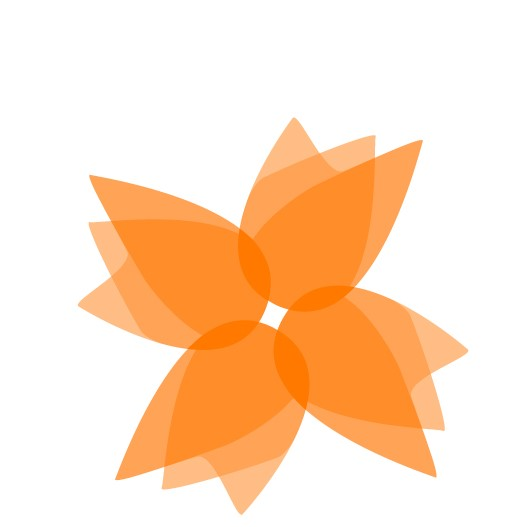

<ion-header>
  <ion-navbar color="secondary">
    <button ion-button menuToggle>
      <ion-icon name="menu"></ion-icon>
    </button>
    <ion-title>Jaran</ion-title>
  </ion-navbar>
</ion-header>

<ion-content padding>

  <div text-center>
    <h3>Bienvenido a Jaran</h3>
    

    <p style="font-size: 15px">
      If you get lost, we are sorry.
    </p>
  </div>

</ion-content>
